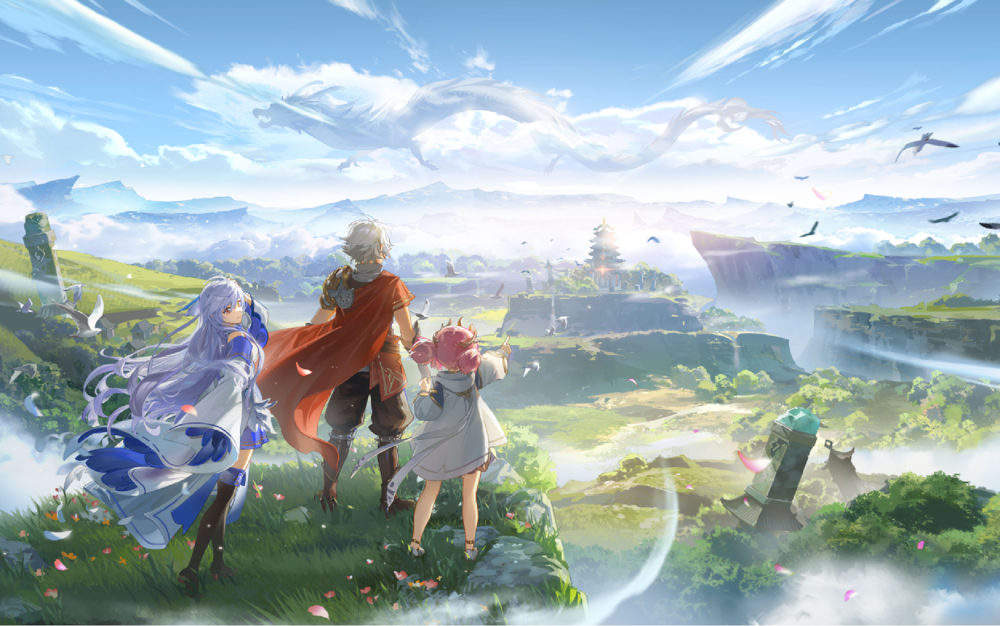
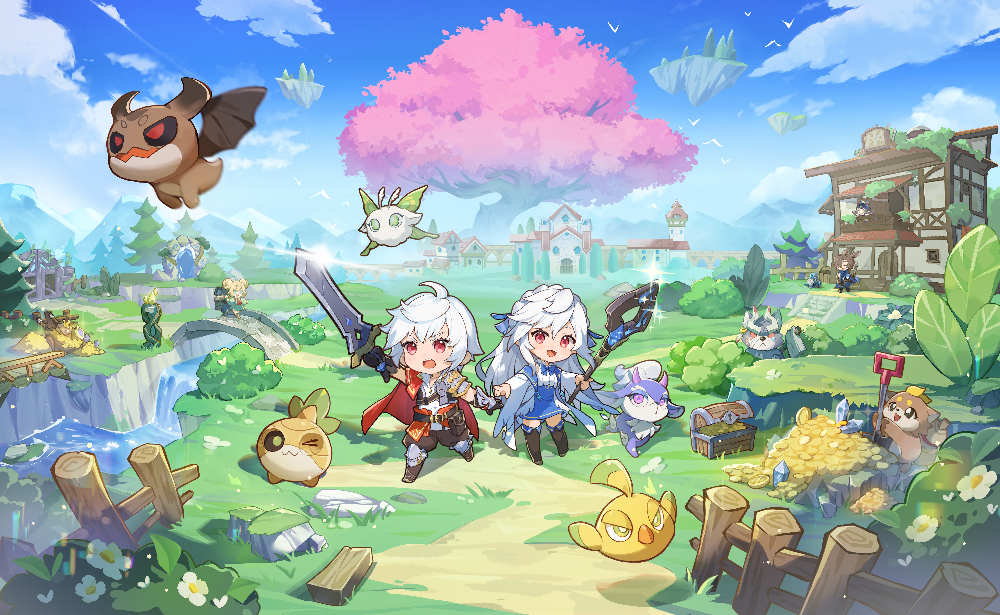
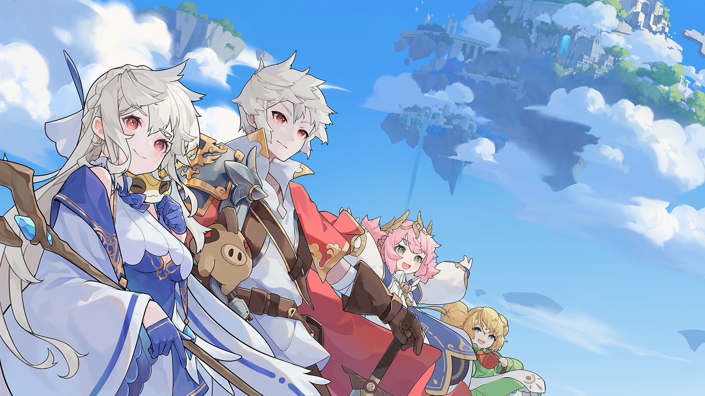
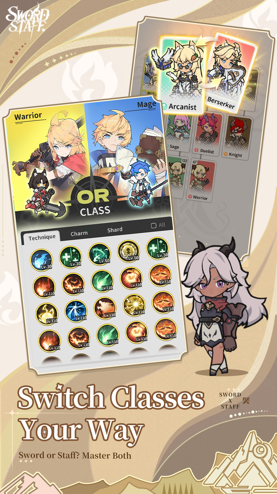
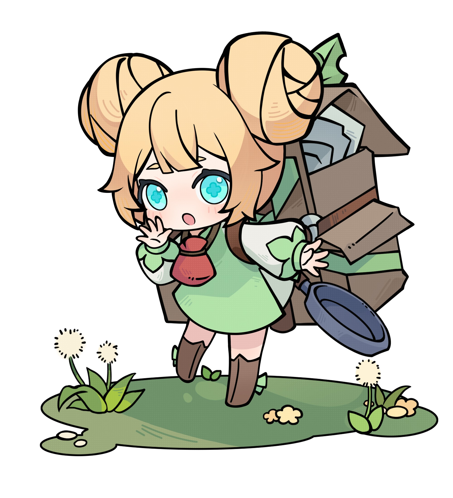

SwordxStaff Wiki
Chào mừng bạn đến với Sword x Staff Wiki!
|
   Giới thiệu • Trang Web Chính Thức • Facebook Chính Thức Sword x Staff là một tựa RPG độc nhất vô nhị — một “RPG Con Đường Thứ Ba” (Third Way RPG). Chiến thuật, khám phá thế giới rộng lớn, chơi nhàn rỗi (idle) — sao phải chọn một khi bạn có thể có tất cả? Chơi hardcore cũng được, hay chỉ chill cũng được — dù thế nào bạn cũng sẽ tìm thấy niềm vui của riêng mình. Cái cảm giác thực sự khác biệt. Không áp lực, không có một cách chơi duy nhất — cứ nhảy vào, khám phá, và để cuộc phiêu lưu cuốn theo cách của bạn. Tò mò không biết lối chơi thực sự ra sao? Hơn 200+ kỹ năng đang chờ bạn kết hợp, phối trộn và thử nghiệm, để trận chiến của bạn mang đậm dấu ấn 100% của riêng bạn. Và bạn không hề đơn độc! Bạn sẽ gặp những bạn đồng hành từ khắp nơi và cùng nhau đối đầu với các Hieromon bí ẩn! Vui lòng đọc Trang Cộng Đồng và Nội Quy trước khi chỉnh sửa và thảo luận! |
Kết Hợp & Phối Trộn! Bậc Thầy Kỹ Năng
|

Game có nền tảng song lớp Chiến Binh – Pháp Sư kinh điển[1], được mở rộng qua nhiều nhánh lớp và chuyên môn nâng cao. Phiên bản hiện tại có 6 bậc lớp, và bậc thứ 7 đang được phát triển. Người chơi có thể chuyển lớp miễn phí một lần mỗi tuần[2], và giữ nguyên toàn bộ cấp độ tổng thể cùng tiến trình kỹ năng.
|
Bắt Đầu
|
 Chúng tôi là một cộng đồng không ngừng lớn mạnh với rất nhiều điều để mang đến, và vì vậy chúng tôi chào đón bạn bổ sung bất kỳ thông tin liên quan nào vào các bài viết của chúng tôi. Tạo tài khoản và tham gia cùng chúng tôi! Hiện tại chúng tôi đang chỉnh sửa hơn 56 bài viết và 228 tập tin |